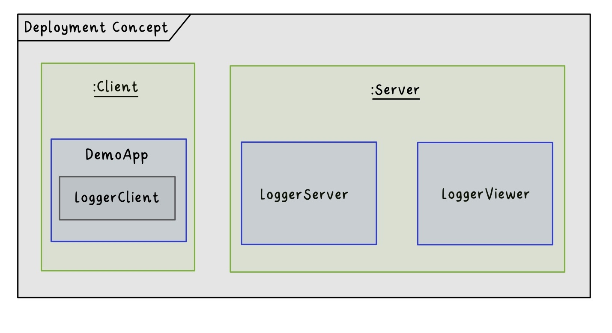
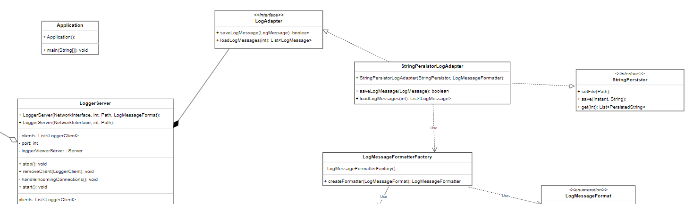
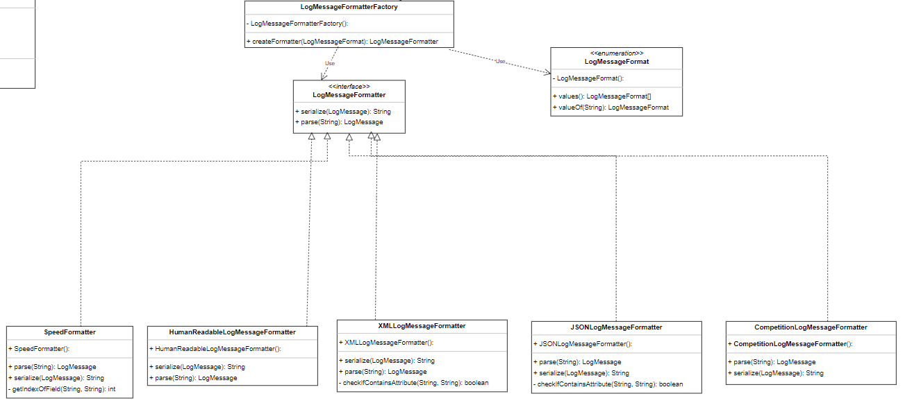
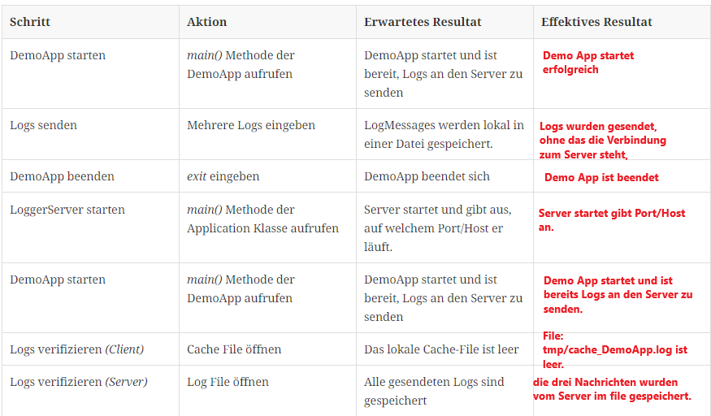
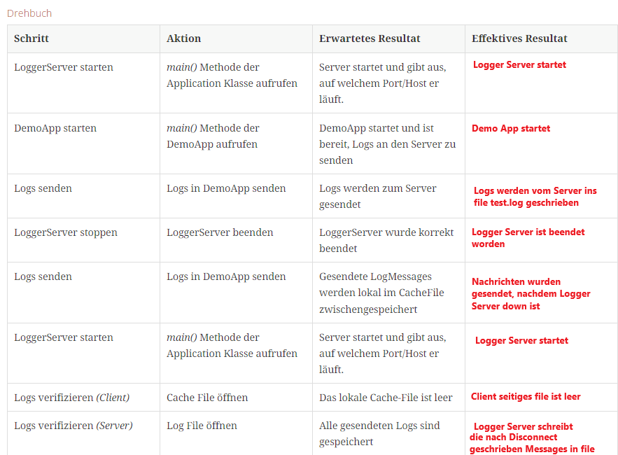
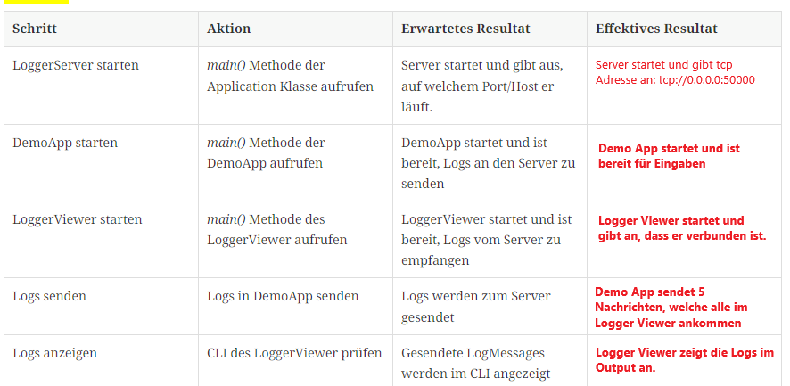

About arc42
arc42, the template for documentation of software and system architecture.
Template Version 8.2 EN. (based upon AsciiDoc version), January 2023
Created, maintained and © by Dr. Peter Hruschka, Dr. Gernot Starke and contributors. See https://arc42.org.
Dieses Dokument beschreibt die Ziele und Anforderungen des Projekts für ein verteiltes Logging-System, das in mehreren Sprints umgesetzt wird, um Zuverlässigkeit, Skalierbarkeit und Erweiterbarkeit sicherzustellen.
1. Übersicht der Anforderungen
-
Transparente Behandlung von Netzwerkunterbrechungen.
-
Unterstützung mehrerer Logger-Komponenten auf verschiedenen Systemen.
-
Erweiterbarkeit der Speicherformate und flexible Konfigurationsmöglichkeiten.
-
Echtzeitanzeige von Log-Messages über einen LoggerViewer.
1.1. Qualitätsziele
-
Sicherstellung von Konsistenz und Zuverlässigkeit beim Loggen, auch bei Verbindungsunterbrüchen.
-
Hohe Wartbarkeit durch den Einsatz von Design-Patterns wie Adapter und Strategien.
-
Skalierbare Architektur, die wachsende Anforderungen unterstützt.
-
Vorbereitung auf Wettbewerbsbedingungen mit standardisierten Log-Formaten.
1.2. Projektumgebung
| Rolle | Gruppenmitglieder | Beschreibung |
|---|---|---|
Projektüberwachung |
R. Gisler, M. Bättig |
Überwachung des Fortschritts, Sicherstellung der Ziele und Problemmanagement. |
Entwicklerteam |
M. Joss, F. Stettler, R. Venetz, T.Felder |
Klare Anforderungen, saubere Codebasis, Zugang zu benötigten Ressourcen. |
Test-Team |
M. Joss, F. Stettler, R. Venetz, T.Felder |
Detaillierte Teststrategie, klar definierte Akzeptanzkriterien, verlässliche Testumgebung. |
Nutzer |
Systemadministratoren |
Einfaches Deployment, transparente Log-Ausgabe, Wiederherstellbarkeit nach Fehlern. |
Die Mitglieder des Projektteams haben die folgenden Verantwortlichkeiten innegehabt.
| Aufgabe | Gruppenmitglied |
|---|---|
Projektleiter |
Fabian Stettler |
Scrum Master |
Robin Venetz |
Schnittstellenverantwortlicher |
Tobias Felder |
Product-Owner |
Michael Joss |
2. Architecture Constraints
Für die Umgebung und Struktur rund um den Logger, haben wir uns dazu entschieden ein Context-Diagramm zu erstellen. Dieses Zeigt die relevanten Akteure und Systeme auf und bereitet uns so eine Übersicht über das Gesamtsystem.
Der Administrator eines Systems kann über das Verteilte Logging System einen Logger auf einem Client einrichten. Dieser Logger ermöglicht es, Logs zentral zu sammeln und zu überwachen. Dabei erhält der Administrator eine umfassende Übersicht über die Logs des jeweiligen Clients, einschliesslich:
-
Echtzeit-Überwachung: Neue Logs werden sofort an den zentralen LoggerServer weitergeleitet.
-
Historische Logs: Alle gespeicherten Logs können bei Bedarf analysiert werden.
-
LoggerViewer: Es wurde ein LoggerViewer implementiert, welcher in Echtzeit die eintreffenden Logs aller verbundenen LoggerComponents auf dem LoggerServer angezeigt.
Beispielhafte Nutzung:
-
Der Administrator konfiguriert einen LoggerComponent auf einem zu überwachenden System, indem er den Hostnamen, sowie den Port des LoggerServers spezifiziert.
-
Mittels dem LoggerComponent können nun LogMessages an den LoggerServer gesendet und somit zentral gesammelt werden.
-
Bei Störungen oder Problemen in der Verbindung zum Server kann das System die LogMessages zwischenspeichern und bei einem erneuten Verbindungsaufbau wieder senden.
-
Die zentral gesammelten LogMessages können mittels eines Monitoring-Tools wie z.B. dem LoggerViewer eingesehen werden
3. System Scope and Context
3.1. Business Context
| Externe Akteure | Beschreibung |
|---|---|
Systemadministratoren |
Verantwortlich für die Konfiguration und Überwachung des Logger-Systems. |
Kunden (Endnutzer der Applikation) |
Indirekte Nutzer, die von den Logs profitieren (z. B. bei der Fehlersuche oder Verbesserung der Applikation). |
Qualitätsmanager |
Bewertet die Qualität der Logs und deren Konformität mit den Standards. |
Externen Domänenschnittstellen
Das System interagiert mit den folgenden externen Domänen:
-
Netzwerkadministration: Zur Verwaltung der Netzwerkverbindungen zwischen den Logger-Komponenten.
-
Docker-Umgebung: Für die Bereitstellung und Verwaltung von Images, welche als Server verwendet werden können.
3.2. Technical Context
| Schnittstelle | Beschreibung |
|---|---|
LoggerComponent → LoggerServer |
Austausch von Log-Messages. |
LoggerServer → StringPersistor |
Speichern von Logs in Dateien über die StringPersistor-Komponente. |
LoggerComponent→ StringPersistor |
Caching von Logs in Dateien über die StringPersistor-Komponente. |
LoggerServer → LoggerViewer |
Bereitstellung von Echtzeit-Log-Daten. |
Technischen Schnittstellen
Die Logger-Komponenten interagieren über standardisierte Protokolle:
-
TCP/IP: Sicherer und zuverlässiger Austausch von Logs.
-
Docker-Integration: Automatisierte Bereitstellung und Konfiguration.
Mapping Input/Output to Channels
-
Input (LoggerComponent): Log-Messages, die von Anwendungen erzeugt werden.
-
Output (LoggerServer): Persistierte Logs in Dateien, Echtzeit-Logs (LoggerViewer).
-
Channel: Kommunikation erfolgt über Netzwerkprotokolle (Custom-TCP-Protokoll und WebSockets).
4. Solution Strategy
Ziel ist ein Remote-Logging-System, mit welchem Logs von einem Client zu einem Server gesendet werden können. Dabei soll der Client Verbindungsunterbrüche handhaben können und keine LogMessages verlieren.
Damit diese Anforderungen abgedeckt werden können, wird eine TCP-Verbindung zum Server aufgebaut, über welche die LogMessages gesendet werden können. Sollte das Senden fehlschlagen oder ein Verbindungsunterbuch auftreten, wird die entsprechende LogMessage in einer lokalen Datei zwischengespeichert. Dies passiert auch für alle darauffolgenden LogMessages, bei denen noch keine Verbindung zum Server hergestellt werden konnte. Sobald die Verbindung zum Server wieder aufgebaut werden konnte, werden alle lokal gespeicherten LogMessages erneut zum Server gesendet. Somit wird sichergestellt, dass keine LogMessages verloren gehen.
Serverseitig sowie auch Client Seitig (bei einem Verbindungsabbruch oder einem Fehler) werden die LogMessages mittels der StringPersistor API in ein LogFile gespeichert.
5. Building Block View
5.1. Level 2 - Container-Diagram
Das Container-Diagram zeigt die internen Komponenten und deren Beziehungen zueinander. Es gibt mehrere Container, welche zum einen zum Logging-System gehören und wie das Logging-System nach aussen kommuniziert, bzw. wie mit dem Logging-System interagiert werden.
5.2. Level 3 - Component-Diagram
Im Komponenten-Diagram wird der interne Aufbau der Container genauer aufgezeigt.
5.2.1. Logger-Component
Der Logger-Component ist in fünf Komponenten aufgebaut:
-
LoggerComponent: Dies ist der Logger selbst, welcher vom Endbenutzer zum Senden von LogMessages verwendet wird.
-
LogMessageSendQueue: Mittels dieses Interfaces können verschiedene Methoden zum Senden von LogMessages implementiert und verwendet werden. Momentan gibt es eine Strategie, die BlockingLogMessageSendQueue.
-
ConnectionAPI: Dies ist eine auf Sockets aufgebaute Schnittstelle, mit derer mit dem Server kommuniziert werden kann.
-
LogMessageFormatter: Diese Formatter ermöglichen es, die LogMessages in verschiedene Formaten zu formatieren.
5.2.2. Logger-Server
Der Logger-Server empfängt und persistiert LogMessages und besteht aus sechs Komponenten:
-
Application: Der Startpunkt des Servers.
-
ConfigSource: Verschiedene Möglichkeiten, den Server zu konfigurieren (.env, Properties oder CLI-Args).
-
LoggerServer: Der Server selbst.
-
LogAdapter: Eine Wrapper-Klasse für das StringPersistor Interface. Es ermöglicht eine vereinfachte Verwendung dieses, speziell für LogMessages zugeschnitten.
-
LoggerClient: Repräsentiert einen verbundenen Client, welcher LogMessages senden und persistieren möchte.
-
LogMessageFormatter: Diese Formatter ermöglichen es, die LogMessages in verschiedene Formate zu formatieren.
5.2.3. Logger-Viewer
-
LoggerViewerServer: Server, welcher die Verbindungen der Clients managed.
-
ViewerClient: Die Client Applikation, welche die Messages als Viewer auf der Command Line ausgibt.
-
MessageDispatcher: Diese Klasse erhält vom Viewer Server die LoggerViewerClient Informationen. Auf Basis dieser Informationen sendet der MessageDispatcher die Nachrichten an die verbundenen Clients senden.
5.3. Level 4 - Klassen Diagramm
Das Klassendiagramm bietet einen genaueren Einblick in die Implementation der Komponente. Nachfolgend werden die Klassendiagramme für alle Komponenten genauer beschrieben
5.3.1. Logger-Component
Dieses Diagramm zeigt das Zusammenspiel der Klassen des LoggerComponent. Nachfolgend werden die einzelnen Klassen genauer erläutert:
-
LoggerFactory: Dies ist die Implementation des
LoggerSetupInterfaces des Interface-Teams. Diese wird genutzt, um standardisiertLoggerComponentInstanzen zu erzeugen. -
LoggerComponent: Dies ist die Implementation des
LoggerInterfaces des Interface-Teams. Mittels dieser Klassen kann der Endbenutzer LogMessages einfach an den Server senden. -
Connection: Die
ConnectionKlasse bietet eine einfache Möglichkeit, eine TCP Verbindung zum Server aufzubauen undNetworkTransferable(siehe Logger-Component) Objekte zu diesem zu senden. -
ReconnectConnection: Dies ist eine Spezialisierung der
ConnectionKlasse und ermöglicht es, automatisch einen neuen Verbindungsaufbauversuch zu starten, nachdem eine gewisse Zeit vergangen ist. -
LogMessageCacheStrategy: Dies ist ein Interface welches es ermöglicht, verschiedene Methoden des Cachings von LogMessages zu implementieren.
-
FileCacheStrategy: Die
FileCacheStrategyist eine Implementation vonLogMessageCacheStrategy, welche die LogMessages in eine lokale Datei speichert. Dabei wird dieStringPersistorApiverwendet. -
LogMessageSendQueue: Dies ist ein sehr schmales Interface, welches die Implementation verschiedener Methoden zum Senden von LogMessages and den Server ermöglicht. So können blockierende, nicht-blockierende oder parallele Strategien implementiert werden.
-
BlockingLogMessageSendQueue: Dies ist eine Implementation von
LogMessageSendQueue, welche LogMessages synchron an den Server sendet.
5.3.2. Logger-Server
Dieses Diagramm zeigt das Zusammenspiel der Klassen des LoggerServers. Nachfolgend werden die einzelnen Klassen genauer erläutert:
-
Application: Diese Klasse ist zum Starten des Servers zuständig. Dabei wir die Konfiguration mittels einer oder mehreren
ConfigSourceeingelesen und einLoggerServererstellt und gestartet. -
LoggerServer: Dies ist der Server selbst. Hier werden die eintreffenden TCP Verbindungen gehandhabt, sowie bestehende Verbindungen gespeichert.
-
LoggerClient: Diese Klasse repräsentiert einen Verbundenen LoggerComponent, welcher LogMessages sendet. Hier wird dann mittels der vorgegebenen Formatierungsstrategie die LogMessage formatiert und mit dem
LogAdapter(siehe Logger-Common) in ein Log-File gespeichert. -
ApplicationConfig: Hier kann die Konfiguration des Servers mittels einer oder mehrerer
ConfigSourcegeladen werden. -
ConfigSource: Dies ist eine simple Schnittstelle, welche es ermöglicht, Konfigurationen von mehreren Quellen einzulesen.
-
EnvConfigSource: Ermöglicht das Einlesen der Konfiguration mittels einer .env Datei.
-
ArgsConfigSource: Ermöglicht das Einlesen der Konfiguration mittels der CLI-Argumente.
-
PropertiesConfigSource: Ermöglicht das Einlesen der Konfiguration mittels eines Property-Files.
5.3.3. Logger-Common
Dieses Diagramm zeigt das Zusammenspiel der Klassen des LoggerCommon. Diese Klassen werden vom Logger-Server und Logger-Component verwendet.
-
NetworkTransferable: Dieses Interface spezifiziert, wie Klassen über ein
DataOutputStreamgeschrieben und überDataInputStreamwieder eingelesen werden kann. -
LogMessage: Diese Klasse stellt die auszutauschenden Log-Einträge dar. Diese implementiert das
NetworkTransferableInterface, damit sie vom Client zum Server gesendet werden kann. -
NetworkMessageInputStream: Ein Wrapper für einen
InputStream, zugeschnitten für Objekte des TypsNetworkTransferable. -
NetworkMessageOutputStream: Ein Wrapper für einen
OutputStream, zugeschnitten für Objekte des TypsNetworkTransferable. -
InstantSerializer: Eine Hilfsklasse welche es einfach ermöglicht, einen Instant zu einem String zu formatieren und diesen daraus wieder auszulesen.
-
FileCreator: Eine Hilfsklasse mit derer eine Datei in beliebig vielen (existenten oder nicht existenten) Unterordnern erstellt werden kann.
-
EnumSerializer: Diese Klasse ermöglicht es, irgendwelche Enums über einen
DataOutputStreamzu schreiben und über einenDataInputStreamwieder einzulesen. -
LogMessageFormat: Dieses Enum listet alle möglichen Formate für Logs auf.
-
LogMessageFormatterFactory: Diese Factory erzeugt den passenden Formatter für das gewünschte Format.
-
LogMessageFormatter: Spezifikation, wie ein Formatierer für Logs auszusehen hat.
-
SpeedFormatter: Ein Formatierer, welcher auf Geschwindigkeit der Serialisation und Deserialisation optimiert ist.
-
HumanReadableLogMessageFormatter: Formatiert Logs in ein für Menschen lesbares Format.
-
XMLLogMessageFormatter: Formatiert Logs als XML.
-
JSONLogMessageFormatter: Formatiert Logs als JSON.
-
CompetitionLogMessageFormatter: Formatiert Logs für den Wettkampf am Ende des Moduls VSK.
-
LogAdapter: Dieses Interface bietet eine einfache Schnittstelle, um Logs zu persistieren.
-
StringPersistorLogAdapter: Ein Adapter für die StringPersistorApi, welche Logs in eine lokale Datei schreibt.
5.3.4. Logger-Viewer
Dieses Diagramm zeigt das Zusammenspiel der Klassen des LoggerViewers. Nachfolgend werden die einzelnen Klassen genauer erläutert:
-
LoggerServer: Dies ist unsere LoggerServer Klasse, welche oben bereits beschrieben wurde.
-
org.tyrus.glassfish.server: Diese Klasse ist ein Server, welcher auf der org.glassfish.tyrus.server Library basiert und mit WebSockets kommuniziert. Sie wird in LoggerServer gestartet und ist für Clients erreichbar. Gibt Session Objekte an den MessageDispatcher weiter.
-
LoggerViewerServerEndpoint: Diese Klasse handelt die Logik des Server ab und muss bei der Erstellung angegeben werden. Sie gibt an, was bei einer neuen Connection passiert und gibt zudem neue Clients (Sessions) an den Message Dispatcher. Sie definiert auch, was passiert, wenn eine Session clientseitig geschlossen wird.
-
LoggerViewerClient: Diese Klasse ist für die Client-Logik zuständig. Sie initialisiert die Verbindung zum Server, und gibt Nachrichten vom Server auf der Konsole aus.
-
MessageDispatcher: Diese Klasse erhält von LoggerViewerServerEndpoint die LoggerViewerClient Informationen. Auf Basis dieser Informationen sendet der MessageDispatcher die Nachrichten an die verbundenen Clients senden.
-
Session: Diese Klasse repräsentiert eine Verbindung zwischen einem Client und dem Server. Sie wird vom Server erstellt und an den MessageDispatcher weitergegeben.
6. Runtime View
6.1. Erstellung eines neuen LoggerComponent
Das folgende Sequenzdiagramm zeigt auf, wie einen neue LoggerComponent Instanz kreiert wird, anhand eines Beispiels mit der DemoApp:
sequenceDiagram
title Create Logger instance
participant DA as DemoApp
participant LSF as LoggerSetupFactory
participant LF as LoggerFactory
participant Cacher as LogMessageCacheStrategy
participant Queue as LogMessageSendQueue
participant C as Connection
participant LC as LoggerComponent
DA->>LSF: provider(providerName)
LSF->>LF: new LoggerFactory()
LF-->>LSF: new LoggerFactory instance
LSF-->>DA: new LoggerFactory instance
DA->>LF: getLogger(destination, name, ll)
LF->>Cacher: new FileCacheStrategy()
Cacher-->>LF: cacher instance
LF->>Queue: new LogMessageSendQueue(host, port)
Queue->>C: new Connection(host, port)
C-->>Queue: connection instance
Queue-->LF: queue instance
LF->>LC: new LoggerComponent(queue, clientName, ll)
LC-->>LF: LoggerComponent instance
LF-->>DA: LoggerComponent instance
Die DemoApp erhält mit von der LoggerSetupFactory eine neue Instanz der LoggerFactory. Diese LoggerFactory kann dann genutzt werden, um mittels getLogger() eine
neue Instanz des LoggerComponents zu erzeugen. Dabei wird von der LoggerFactory eine neue LogMessageSendQueue erstellt, welche für das Senden von LogMessages
zuständig ist. Dabei wird von der LoggerFactory auch eine neue LogMessageCacheStrategy erstellt, welche das lokale Caching von LogMessages übernimmt.
Die LogMessageSendQueue nutzt intern die Connection Klasse, um eine TCP Verbindung zum Server aufzubauen und über diese LogMessages zu versenden.
6.2. Senden von Logs
Das folgende Sequenzdiagramm zeigt auf, wie Logs von einer Client-App (hier die DemoApp) an den Server versendet werden.
sequenceDiagram
title Sending logs
participant DA as DemoApp
participant LC as LoggerComponent
participant LM as LogMessage
participant Queue as LogMessageSendQueue
participant Cacher as LogMessageCacheStrategy
participant C as Connection
DA->>LC: info(message)
LC->>LM: new LogMessage(now, name, ll, message)
LM-->>LC: message: created instance
LC-->>Queue: enqueue(message)
note over Queue: example with the BlockingLogMessageSendQueue
alt !connectionReady
Queue->>Cacher: save(message)
else
Queue->>C: send(message)
C-->>Queue: sendState
alt sendState == false
Queue->>Cacher: save(message)
end
end
Die DemoApp kann mittels info, warning etc. Logs an den Server senden. Dabei wird anhand des von der DemoApp übergebenen Texts und des LogLevels eine neue LogMessage erstellt. Diese wird dann der LogMessageSendQueue übergeben, welche das Versenden von Logs handhabt. Falls keine Verbindung zum Server bestehen sollte, wird die LogMessage mit der genutzten Caching-Strategy lokal gespeichert. Sollte eine Verbindung zum Server bestehen, so wird versucht die LogMessage zum Server zu senden. Sollte dies scheitern, wird die LogMessage lokal zwischengespeichert.
6.3. Senden von Objekten über das Netzwerk
Das folgende Sequenzdiagramm zeigt auf, wie Objekte zwischen Client und Server ausgetauscht werden:
sequenceDiagram
title Transfer objects over a TCP stream
participant Client as Client
participant OBJ as NetworkTransferable
participant Conn as Connection
participant OUT as NetworkMessageOutputStream
participant IN as NetworkMessageInputStream
participant Server as Server
Client->>OBJ: new NetworkTransferable()
OBJ-->>Client: obj: new instance
Client->>Conn: send(obj)
alt isConnected() == false
Conn-->>Client: state: false
else
Conn->>OUT: writeObject(obj)
OUT->>OBJ: serialize(this)
OUT->>OUT: flush()
OUT-->>IN: sends bytes over tcp connection
OUT-->>Conn: flushed
Conn-->>Client: object sent
end
Server->>IN: nextObject()
Note over IN: Reads the next serialVersionID
IN->>IN: id: readShort()
Note over IN: Selects object type based on serialVersionID
alt id == NetworkTransferable.serialVersionUID
IN->>OBJ: deserialize(this)
OBJ-->>IN: instance: deserialized data
IN-->>Server: instance
else
IN-->>Server: null
end
Objekte können mittels des NetworkMessageOutputStreams gesendet werden, welcher eine Spezialisierung des DataOutputStreams ist. Das schreiben Daten auf den OutputStream handhabt das zu sendende Objekt selbst.
Auf der Gegenseite kann der NetworkMessageInputStreams genutzt werden, um das nächste Objekt auf dem Stream zu lesen. Dabei wird zuerst die serialVersionUID eingelesen und anhand derer entschieden, welche Implementation von NetworkTransferable erstellt werden soll.
7. Deployment View
Dieser Abschnitt beschreibt die Zuordnung von Komponenten zu den Zielsystemen (Deployment-Systeme) sowie die Anforderungen an diese Systeme. Verschiedene Szenarien werden dargestellt, um die Flexibilität und Skalierbarkeit des Systems zu verdeutlichen.
7.1. Infrastructure Level 1

Wie in dem obenstehenden Diagramm ersichtlich, wird das Logger System, auf zwei physischen Komponenten laufen. Zum einen auf ein Client welcher die Logs senden will und auf den Server, welcher die Logs sammelt und gebündelt zur Verfügung stellt.
- Mapping von Building Blocks zur Infrastruktur
-
-
LoggerComponent: Wird auf den Client-Systemen ausgeführt und sammelt Log-Messages.
-
LoggerServer: Läuft auf zentralen Servern und verarbeitet Log-Messages.
-
LoggerViewer: Läuft auf demselben System wie der Logger Server und wird zur Echtzeit-Überwachung betrieben werden.
-
7.2. Infrastructure Level 2
7.2.1. LoggerComponent
Beschreibung: - Die LoggerComponent wird auf den Zielsystemen der Clients installiert. - Sie sammelt Logs und sendet sie über eine TCP/IP-Verbindung an den zentralen LoggerServer. - Falls die Verbindung unterbrochen wird, speichert sie Logs lokal zwischen.
Anforderungen: - Betriebssystem: Plattformunabhängig, Java-kompatibel. - Netzwerk: Zugriff auf den LoggerServer erforderlich.
7.2.2. LoggerServer
Beschreibung: - Der LoggerServer verarbeitet Log-Messages und speichert sie über die StringPersistor-Komponente.
Anforderungen: - Netzwerk: stabile Verbindung zu LoggerClients und LoggerViewer. - Speicher: Ausreichend Kapazität für persistente Log-Daten.
7.2.3. LoggerViewer
Beschreibung: - Der LoggerViewerServer pusht die Log-Nachrichten die der Server erhält an verbundene Clients. - Der LoggerViewerServer läuft auf demselben System wie der LoggerServer
Anforderungen: - Betriebssystem: Plattformunabhängig. - Netzwerk: Zugriff auf LoggerServer erforderlich.
7.2.4. LoggerViewerClient
Beschreibung: - Der LoggerViewerClient läuft auf einem eigenen System und kann sich auf den LoggerViewerServer verbinden und Messages anzeigen lassen. - er wird mit einer .jar Datei gestartet und gibt Logs auf der Console aus. Anforderungen: - Betriebssystem: Plattformunabhängig. - Netzwerk: Zugriff auf LoggerViewerServer erforderlich.
8. Concepts
In diesem Kapitel werden die Konzepte, welche mehrere Komponenten betreffen, genauer beschrieben.
8.1. Schnittstelle zwischen LoggerComponent und LoggerServer
Die Schnittstelle zwischen LoggerComponent und LoggerServer wurde mittels TCP Sockets realisiert. Um Objekte über den TCP Stream zu senden, wird das NetworkTransferable Interface verwendet. Dieses gibt die Methode serialize(DataOutputStream outStream) vor. In dieser Methode werden alle benötigten Attribute der Klasse auf den Stream geschrieben. Wichtig hierbei ist, dass die serialVersionUID des Objektes zuerst auf den Stream geschrieben wird. Anhand dieser kann der Empfänger verschiedene Objekte identifizieren. Der Empfänger nutzt den NetworkMessageOutputStream, welcher anhand der serialVersionUID der Klassen die entsprechende deserialize(DataInputStream inStream) Methode aufruft. Diese Methode liest dann die nötigen Daten aus dem Stream und erstellt ein neues Objekt der entsprechenden Klasse. Ein Sequenzdiagramm dazu befindet sich in der Dokumentation zur Runtime View.
8.2. Teststrategie für das Logger-Projekt
8.2.1. Ziel der Teststrategie
Die Teststrategie für das Logger-Projekt dient dazu, die Qualität und Funktionsfähigkeit des Loggers sicherzustellen. Die Tests sollen sicherstellen, dass alle Anforderungen der User Stories und die Akzeptanzkriterien erfüllt werden. Weiter umfasst die Teststrategie manuelle Systemtests, um die wichtigsten Funktionen des Loggers aus Benutzersicht zu prüfen, sowie automatisierte Tests, um eine kontinuierliche Qualitätssicherung zu gewährleisten.
8.2.2. Testansätze
Manuelle Systemtests
Die manuellen Tests sollen grundlegende Funktionen des Loggers validieren und sich an den Akzeptanzkriterien der User Stories orientieren. Für die drei wichtigsten Anwendungsfälle werden Drehbücher erstellt, um eine strukturierte und nachvollziehbare Prüfung zu gewährleisten.
1. Logs aus Cache nach Client Neustart an Server senden
Dieser Test überprüft, ob Logs korrekt zwischengespeichert werden, auch wenn von Anfang an keine Verbindung zum Server besteht.
Vorbedingungen
-
Java Entwicklungsumgebung installiert (z.B. Intellij IDEA)
-
Java installiert (Version 21.x)
-
g05-demoapp und g05-logger sind lokal ausgecheckt
-
Genutzte Logger Dependency in der DemoApp stimmt mit LoggerServer überein
Drehbuch
| Schritt | Aktion | Erwartetes Resultat | Effektives Resultat |
|---|---|---|---|
DemoApp starten |
main() Methode der DemoApp aufrufen |
DemoApp startet und ist bereit, Logs an den Server zu senden |
|
Logs senden |
Mehrere Logs eingeben |
LogMessages werden lokal in einer Datei gespeichert. |
|
DemoApp beenden |
exit eingeben |
DemoApp beendet sich |
|
LoggerServer starten |
main() Methode der Application Klasse aufrufen |
Server startet und gibt aus, auf welchem Port/Host er läuft. |
|
DemoApp starten |
main() Methode der DemoApp aufrufen |
DemoApp startet und ist bereit, Logs an den Server zu senden |
|
Logs verifizieren (Client) |
Cache File öffnen |
Das lokale Cache-File ist leer |
|
Logs verifizieren (Server) |
Log File öffnen |
Alle gesendeten Logs sind gespeichert |
2. LoggerViewer sieht alle LogMessages live
Dieser Test überprüft, ob der LoggerViewer alle Logs in Echtzeit empfangen und anzeigen kann.
Vorbedingungen
-
Java Entwicklungsumgebung installiert (z.B. Intellij IDEA)
-
Java installiert (Version 21.x)
-
g05-demoapp g05-logger sind lokal ausgecheckt
-
Genutzte Logger Dependency in der DemoApp stimmt mit LoggerServer überein
Drehbuch
| Schritt | Aktion | Erwartetes Resultat | Effektives Resultat |
|---|---|---|---|
LoggerServer starten |
main() Methode der Application Klasse aufrufen |
Server startet und gibt aus, auf welchem Port/Host er läuft. |
|
DemoApp starten |
main() Methode der DemoApp aufrufen |
DemoApp startet und ist bereit, Logs an den Server zu senden |
|
LoggerViewer starten |
main() Methode des LoggerViewer aufrufen |
LoggerViewer startet und ist bereit, Logs vom Server zu empfangen |
|
Logs senden |
Logs in DemoApp senden |
Logs werden zum Server gesendet |
|
Logs anzeigen |
CLI des LoggerViewer prüfen |
Gesendete LogMessages werden im CLI angezeigt |
3. Verbindungsunterbruch während DemoApp läuft
Dieser Test überprüft, ob alle Logs zum Server gesendet werden, auch wenn die Verbindung zwischendurch getrennt wurde.
Drehbuch
| Schritt | Aktion | Erwartetes Resultat | Effektives Resultat |
|---|---|---|---|
LoggerServer starten |
main() Methode der Application Klasse aufrufen |
Server startet und gibt aus, auf welchem Port/Host er läuft. |
|
DemoApp starten |
main() Methode der DemoApp aufrufen |
DemoApp startet und ist bereit, Logs an den Server zu senden |
|
Logs senden |
Logs in DemoApp senden |
Logs werden zum Server gesendet |
|
LoggerServer stoppen |
LoggerServer beenden |
LoggerServer wurde korrekt beendet |
|
Logs senden |
Logs in DemoApp senden |
Gesendete LogMessages werden lokal im CacheFile zwischengespeichert |
|
LoggerServer starten |
main() Methode der Application Klasse aufrufen |
Server startet und gibt aus, auf welchem Port/Host er läuft. |
|
Logs verifizieren (Client) |
Cache File öffnen |
Das lokale Cache-File ist leer |
|
Logs verifizieren (Server) |
Log File öffnen |
Alle gesendeten Logs sind gespeichert |
Test-Protokolle sind in diesem Dokument unter Punkt 13 unterhalb dem Glossary zu finden!
Weitere manuelle Systemtests
Systemtest 1: Log-Erfassung und -Speicherung
-
Vorbedingungen: Der LoggerServer ist betriebsbereit und gestartet.
-
Schritte:
-
Eine neue Log-Nachricht mit Beispieltext eingeben und mit der <Enter> Taste Versenden.
-
Überprüfen, ob die Nachricht korrekt im System gespeichert wird.
-
-
Erwartetes Ergebnis: Die Log-Nachricht wird erfolgreich erfasst und in dem File angehängt.
Systemtest 2: Filterfunktion
-
Vorbedingungen: Der LoggerServer ist betriebsbereit und gestartet.
-
Schritte:
-
Einen Filter auf ein Loglevel setzen.
-
Prüfen, ob nur die Ergebnisse im Log auftauchen, welche das Minimum dessen LogLevels haben.
-
-
Erwartetes Ergebnis: Nur die Einträge, welche das erforderte Log-Level oder ein Log-Level höherer Stufen hat, ist im Log-File anzutreffen.
Automatisierte Tests
Die automatisierten Tests fokussieren sich auf wiederkehrende Testfälle und gewährleisten eine kontinuierliche Überwachung der Qualität. Schwerpunkte liegen auf Unit-Tests und Integrations-Tests. Die Tests werden im mvn-build Prozess sowie in der CI/CD-Pipeline integriert, sodass neue Änderungen automatisch überprüft werden.
Automatisierte Integrations-Tests mit Docker umfassen:
Unit-Tests zur Validierung einzelner Funktionen und Methoden.
Integrations-Tests zur Prüfung der Zusammenarbeit von Komponenten.
Unser Projekt umfasst die folgenden-Integrationstests:
1. LoggerViewerClientIT: Startet den LoggerServer bzw. LoggerViewerServer innerhalb eines Docker Containers. Logger verbindet sich mit dem LoggerServer und LoggerViewerClient verbindet sich mit dem LoggerViewerServer. Danach werden Nachrichten auf den LoggerServer gesendet und überprüft, ob sie im LoggerViewerClient ankommen.
2. CacheLogMessagesIT: Startet den LoggerServer in einem Container und verbindet sich mit einer Instanz eines Loggers auf diesen Server.
Es werden dann Nachrichten an den Server gesendet und überprüft, ob sie im Container gespeichert worden sind. Der Pfad des Files im Container wird beim Start angegeben.
3. ReconnectToServerIT: Startet den LoggerServer in einem Container und verbindet sich mit einer ReconnectConnection darauf. Danach wird der Server gestoppt und wieder gestartet.
Es wird überprüft, ob die Connection wieder aufgebaut wird.
Automatisierte Unit-Tests umfassen unter anderen 1. Tests um die Formatter-Strategien zu testen 2. File CreatorTest: Testet, ob die Files korrekt erstellt werden 3. LogLevelThresholdTest: Testet, ob die LogMessages korrekt gefiltert werden 4. Tests um ConfigSource-Varianten zu testen. 5. StringPersistorTest: Testet, ob die LogMessages korrekt gespeichert werden
9. Architecture Decisions
In diesem Kapitel werden die einzelnen, im Projekt verwendeten Patterns mit UML-Diagrammen kurz beschrieben.
9.1. Log Adapter Pattern
Das LogAdapterPattern ermöglicht den Gebrauch des StringPersistorLogAdapter im LoggerServer und in anderen Klassen wie FileCacheStrategy oder LoggerClient. Der LogAdapter wird in unserem Projekt also wiederverwendet. Das Log Adapter Pattern schafft also eine klare Trennung zwischen dem StringPersistor und dem Client (LoggerServer). Der StringPersistor kann jetzt in einem möglichen, weiteren Verlauf des Projekts von anderen Klassen, allenfalls mit der Erstellung eines weiteren Adapters wiederverwendet werden.

9.1.1. Strategy Pattern
Das Strategy Pattern ermöglicht das Serialisieren und Deserialsieren von LogMessages mithilfe des Interface LogMessageFormatter. Die verschiedenen Klassen der File-Typen implementieren alle dieses Interface. StringPersistorLogAdapter oder eine andere Klasse kann jetzt mithilfe der Factory-Methode LogMessageFormatterFactory einen Formatter erstellen, mit welchem dann die LogMessages serialisiert werden können.

9.1.2. Server Config (Strategy)
Beim Konfigurieren des Network Interface (host), dem port und dem Log Output files des LoggerServers wird ebenfalls ein Strategy Pattern verwendet. Beim Starten des Servers kann zwischen drei Strategien ausgewählt werden. Die Konfiguration wird entweder direkt mit den Argumenten der command line, mithilfe eines Property Files oder mit einem .env file vorgenommen.

9.1.3. LogMessageSendQueue und LogMessageCacheStrategy
Es wurde auch an weiteren Stellen in der Architektur oft mit Interfaces gearbeitet, um den Source Code für weitere Erweiterungen offenzuhalten. So haben wir für diese beiden Strategy Pattern jeweils nur eine Strategy, aber zukünftig könnten weitere folgen. LogMessageCacheStrategy hat bis anhin nur eine FileCacheStrategy um Inhalte mithilfe des String Persistors in ein File zu speichern, könnte aber in Zukunft auch eine weitere Strategy zum Cachen in einer Datenbank enthalten. Auch das LogMessageSendQueue Interface könnte von weiteren Klassen implementiert werden und dann mit wenig Aufwand auf unseren Logger nutzbar gemacht werden.

10. Quality Requirements
10.1. Quality Tree
Diagram or Table
| Qualitätsattribut | Beschreibung |
|---|---|
Zuverlässigkeit |
Es dürfen keine Log-Messages verloren gehen, selbst bei Netzwerkunterbrechungen. |
Wartbarkeit |
Neue Funktionen oder Änderungen an der Konfiguration müssen ohne größere Anpassungen implementiert werden können. |
Skalierbarkeit |
Das System muss auch bei mehreren Logger-Clients stabil bleiben. |
10.2. Quality Scenarios
| Szenario-ID | Qualitätsattribut | Beschreibung | Akzeptanzkriterien |
|---|---|---|---|
QS-001 |
Zuverlässigkeit |
Wie wird garantiert, dass Nachrichten nicht verloren gehen? |
Log-Messages werden bei Unterbrechungen lokal zwischengespeichert und nach Wiederherstellung der Verbindung in der korrekten Reihenfolge übertragen. |
QS-002 |
Wartbarkeit |
Wie wird die Erweiterbarkeit des Systems sichergestellt? |
Verwendung von Design-Patterns wie Adapter und Strategien; Konfigurationsmöglichkeiten über externe Dateien. |
QS-003 |
Skalierbarkeit |
Wie wird sichergestellt, dass das System auch mit mehreren Logger-Clients stabil bleibt? |
Der LoggerServer kann mehrere, gleichzeitige Verbindungen verwalten, ohne die Antwortzeit zu beeinträchtigen. |
QS-004 |
Usability |
Wie wird sichergestellt, dass Administratoren das System einfach konfigurieren können? |
Bereitstellung einer benutzerfreundlichen Konfigurationsdatei für die Anpassung von Server- und Client-Parametern. |
QS-005 |
Langlebigkeit |
Wie wird sichergestellt, dass das System auch langfristig wartbar bleibt? |
Dokumentation des Codes, regelmäßige Code-Reviews und eine klare Trennung der Verantwortlichkeiten innerhalb der Komponenten. |
QS-006 |
Fehlermeldung |
Wie wird das System sicherstellen, dass Fehler und Ausnahmen ordnungsgemäß protokolliert werden? |
Das System protokolliert alle Fehler im Logger-Server und stellt sicher, dass alle Ausnahmebedingungen erfasst werden. |
QS-007 |
Echtzeit-Überwachung |
Wie wird das System sicherstellen, dass Administratoren Logs in Echtzeit überwachen können? |
Der LoggerViewer zeigt alle neu eintreffenden Logs in Echtzeit an, ohne dass historische Daten angezeigt werden. |
Optionale Erläuterung: Die Szenarien decken die zentralen Qualitätsanforderungen des Systems ab. Jedes Szenario ist durch Testkriterien und eine definierte Implementierungsstrategie überprüfbar.
11. Risks and Technical Debts
Dieser Abschnitt beschreibt die potenziellen Risiken und technischen Schulden, die während der Architektur-, Design-, Modularisierung-, Implementierung- und Testphasen des Projekts auftreten können. Diese Risiken können zu Problemen, Einschränkungen oder Mehraufwand in der Verwendung oder Weiterentwicklung des Systems führen.
11.1. Architektur
-
Monolithische Architektur: Die Entscheidung, eine monolithische Struktur zu verwenden, kann in der Zukunft zu Skalierbarkeitsproblemen führen. Die Trennung von Komponenten und deren Kommunikation über APIs könnte langfristig eine bessere Wahl sein.
-
Mangelnde Flexibilität bei der Konfiguration: Eine zu starre Architektur, bei der wichtige Konfigurationsparameter fest kodiert sind, könnte spätere Anpassungen erschweren, insbesondere wenn neue Anforderungen hinzukommen.
11.2. Design
-
Zu starke Kopplung von Komponenten: Falls Komponenten zu stark miteinander gekoppelt sind, wird das System schwieriger zu warten und zu erweitern. Dies kann insbesondere dann problematisch sein, wenn neue Logger-Features hinzugefügt oder bestehende Logik geändert werden müssen.
-
Fehlende Modularität: Wenn das Design zu wenige klar abgegrenzte Module aufweist, wird es schwieriger, spezifische Komponenten unabhängig voneinander zu testen, zu erweitern oder zu ersetzen.
-
Suboptimale Nutzung von Design-Patterns: Ein ungenauer oder inkonsistenter Einsatz von Design-Patterns (z.B. Adapter, Strategie) kann zu einer erhöhten Komplexität führen und die Wartbarkeit verringern.
11.3. Modularisierung
-
Zu viele monolithische Komponenten: Wenn die Modularisierung nicht korrekt durchgeführt wird, können wir in Zukunft an einem Punkt landen, an dem einzelne Komponenten nicht mehr einfach ersetzt oder erweitert werden können, da sie sich zu sehr in andere Teile des Systems integrieren.
-
Unklare Schnittstellen zwischen Modulen: Die Wahl von schlecht definierten Schnittstellen zwischen Modulen kann zu Komplikationen führen, wenn neue Features hinzukommen oder bestehende Komponenten ersetzt werden.
11.4. Implementierung
-
Verzicht auf Fehlerbehandlung: Wenn Fehlerbehandlung nicht konsequent implementiert wird, kann dies zu einem Verlust von Logs oder einem fehlerhaften Systemverhalten führen. Insbesondere bei der Verarbeitung von Netzwerkunterbrechungen sollte auf eine robuste Fehlerbehandlung geachtet werden.
-
Zu starke Abhängigkeit von spezifischen Technologien: Falls die Implementierung zu stark auf eine einzelne Technologie oder ein einzelnes Framework (z.B. TLS-Implementierung, bestimmte Bibliotheken) setzt, könnte dies zu Problemen führen, falls diese Technologie in der Zukunft nicht mehr unterstützt wird.
11.5. Testing
-
Unzureichende Unit-Tests: Wenn Unit-Tests nicht umfassend oder unvollständig sind, könnte es später zu unvorhergesehenen Fehlern kommen, die nur unter speziellen Bedingungen auftreten. Dies könnte den Testaufwand bei der Weiterentwicklung erhöhen.
-
Testen von End-to-End-Szenarien: Ein zu fokussierter Testansatz, der nicht auch End-to-End-Tests berücksichtigt, könnte dazu führen, dass das System in der Gesamtintegration fehlerhaft ist, auch wenn einzelne Komponenten gut funktionieren.
12. Test Protokoll
12.1. Test-Protokoll 1: Logger Client cashing ohne Verbindung zum Server
12.1.1. Allgemeine Informationen
-
Datum: 15.12.2024 19:00
-
Tester: Fabian Stettler
-
Ziel: In diesem manuellen Systemtest, soll überprüft werde, ob geloggte Nachrichten vom Client im LoggerViewer live sichtbar sind.
12.1.2. Test Umgebung
-
Hardware: mein persönlicher Laptop (Lenovo Yoga)
-
OS: Windows
-
Software: IntelliJ IDEA, Java 21.x
12.1.3. Test Durchführung

12.1.4. Fazit
-
Der Test hat funktioniert wie angenommen.
12.2. Test-Protokoll 2: Logger Server hat Verbindungsunterbruch während dem Senden von LogMessages
12.2.1. Allgemeine Informationen
-
Datum: 15.12.2024 19:00
-
Tester: Fabian Stettler
-
Ziel: In diesem manuellen Systemtest, soll überprüft werde, ob geloggte Nachrichten vom Client im LoggerViewer live sichtbar sind.
12.2.2. Test Umgebung
-
Hardware: mein persönlicher Laptop (Lenovo Yoga)
-
OS: Windows
-
Software: IntelliJ IDEA, Java 21.x

12.2.3. Fazit
-
Der Test hat funktioniert wie angenommen.
12.2.4. weitere Anmerkungen
-
Beim Unterbruch der Verbindung wird eine SocketException auf der Konsole ausgegeben, kleine Unschönheit.
12.3. Test-Protokoll 3: Client sendet LogMessages an Server und LoggerViewer zeigt sie live an
12.3.1. Allgemeine Informationen
-
Datum: 15.12.2024 19:00
-
Tester: Fabian Stettler
-
Ziel: In diesem manuellen Systemtest, soll überprüft werde, ob geloggte Nachrichten vom Client im LoggerViewer live sichtbar sind.
12.3.2. Test Umgebung
-
Hardware: mein persönlicher Laptop (Lenovo Yoga)
-
OS: Windows
-
Software: IntelliJ IDEA, Java 21.x
12.3.3. Test Durchführung

12.3.4. Fazit
-
Der Test hat funktioniert wie angenommen.